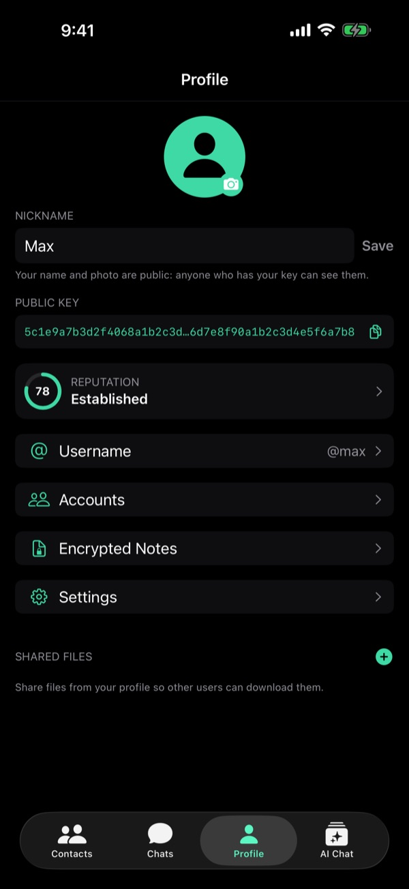

Viper Messenger Overview
Updated for Viper 1.5.34 (November 19, 2026)
What changed since this post. Where the post and the app differ, the app is right.
- Creating an account: Generate from Recovery Phrase (24 words make the Account Key and your TON wallet) or Generate from Account Key (a random key, no phrase).
- The tab bar is Contacts, Chats, Profile and AI Chat; there is no Wallet tab. Other users' wallet addresses are not shown in profiles (since 1.5.11).
- Your Account Key and recovery phrase are in Settings → Security and Data, each behind Face ID or the passcode; your public key stays on your Profile.
- Messages are end-to-end encrypted; the relay deletes each message once delivered. Chats live on your device.
- The old screenshots (old UI, real accounts) were replaced with Viper 1.5.34 screens.



Viper Messenger Overview
What's inside.
Welcome to Viper Messenger - a private messaging app built with privacy as the default.
Accounts
Viper Messenger allows you to manage multiple accounts. Each account is identified by a public key rather than phone number or email.
Creating New Accounts
You have two options when creating an account:
Generate from Mnemonic: Your public key becomes your wallet address. Less privacy, more comfort. One mnemonic gives you access to both chats and wallet.
Generate from Private Key: Your wallet will be separated from your public key and won't be visible to other users automatically. More privacy, less comfort. You'll need a private key for chats and a mnemonic phrase for wallet access.
Profile
In your profile, you can see:
- Your public key - this is your identifier
- Your username - for easier discovery
- Your private key - never share this with anyone
- Your mnemonic phrase - if you created an account via mnemonic (never share this either)
Chats
Your conversations are end-to-end encrypted by default. Messages are protected, and no central service can read or monetize your data.
Example: Chat with developer (@designervoid). This is a private account - you cannot see the wallet address until it's shared.
Example: Chat with another account (@wallet) created via mnemonic. The wallet address is visible from the public key.
Wallet
Viper includes a non-custodial TON wallet. If you created your account via mnemonic, you can view it in your profile, not in the wallet tab. The wallet supports TON, USDT, and DOGEJETTON.
Download the App
Feedback Welcome
The interface is still quite technical in places, but we're gathering feedback and adding improvements constantly.
You can reach out with suggestions or just chat:
- Username: support
- Username: designervoid (developer)
We're excited to hear from you!
First published December 21, 2025 on the old Viper Foundation blog; moved here November 19, 2026. All posts